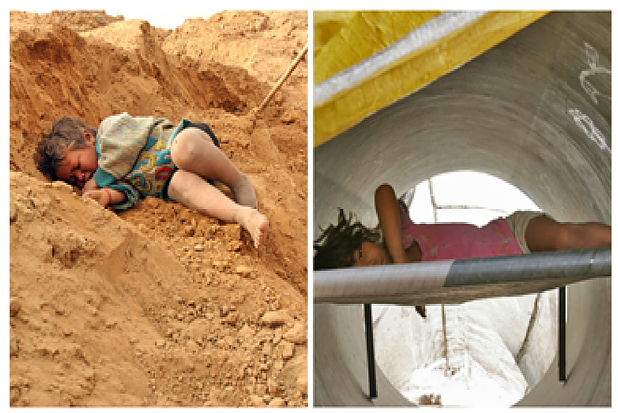
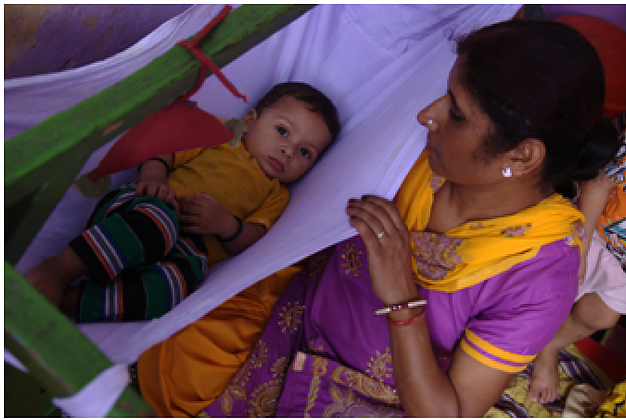

January 16, 2017|MC Team,
A hammock strung between two trees by the side of a field. A large open basket set on a pile of sand at a construction site. Inside a large sewer pipe lying unused by the roadside. A mother’s warm lap. Yes, these are places where we have seen little ones and their older siblings sleep.It is poetic justice that this, our last, post in the A-Z of Early Childhood series is about Sleep!
You are, probably, reading this on a cold January morning. You have just about dragged yourself out of bed to get to work and are craving rest and sleep after a busy, sleep deprived, festive-marriage-New Year celebration season. Sleep, so important and yet so underrated. Even a baby will tell you that.
The infant, growing inside the mother’s womb, spends 16-20 hours per day asleep. Growing children who sleep 10 to 12 hours every night awaken well rested, ready to take on the world: attentive, cheerful and receptive. They are better able to cope with work in the classroom and fights on the playground, chores at home and relationships in the family. If kids sleep well, so do the parents!
Visitors to one of Mobile Creches daycare centres at a construction site will always observe children sleeping – the little ones after their morning and mid-day feeding sessions and the toddlers and above after lunch. Infants often fall asleep while being breastfed; the mothers rush in for a nursing break negotiated with the contractor at the site. It’s a touching sight: the mother gently lifts and places the sleeping baby back into the cotton crib and tears herself away to resume the day’s toil. Sometimes, the afternoon sleep, even for older children, extends for a very long time. Our staff explains that often there is no electricity in the labour camps and too many mosquitos. The centre provides a clean, safe environment and then, sleep is sweet.
A lullaby is an integral part of the folk music traditions in India, with a song for every event – new season, festivals, birth of a child - or daily rituals like husking the paddy, drawing water from the well or rocking the baby to sleep … I’m at the grinding stone, the child on my lap! Do not argue with me, sister in law I'll finish your work in an hour. May everything good come to you, I am all yours! May your life be free of all illness, my child I pray to God, I urge him to shower blessings on you. 1. From Kannada/Gujarati folk songs in Susie Tharu & K. Lalita (eds), “Women Writing in India: 600 BC to the Early Twentieth Century”, Oxford University Press, 1992.
For an adult too, sleep is essential to the brain and body: it detoxifies the brain, boosts memory and improves metabolic health. The average adult will – and should – spend one-third of his/her time on earth sleeping. However, if you starve yourself of sleep – in today’s performance driven world that is becoming the norm rather than the exception – overcompensation over the weekend will not help. Your immune system will take a knock. You may experience increased risk of viral infections, weight gain, diabetes, high blood pressure, heart disease and mental illness.
Without sleep and, therefore, without the rejuvenating benefits of the sleep-wake cycle, the body literally starts to die. Slow wave sleep helps you recover physically while REM sleep helps you recover mentally.
So, what do we do to get good sleep? The simple answer: stay active during the day (a hard day’s night gets you to sleep like a log) while exposing yourself to at least 30 minutes of direct early morning sunlight (to drive circadian system, comprising processes relating to body temperature, blood pressure, hormones, etc., to regulate your 24-hour biological cycle).
Just align yourself to the Sun and the stars. Rise with the Sun and start winding down as it gets dark: dim the lights and no caffeine please. An hour before sleep: YES to soft music, a good book and meditation; NO toe mailing download an app called f.lux, which reduces the brightness of your screen closer to bedtime), whatsapp-ing or TV.
Friends - after the 26 posts, starting July 2016, we have earned our Z’s. We will be back, with recharged batteries, to take you deeper into the world of young children - their contexts, dreams and rights.